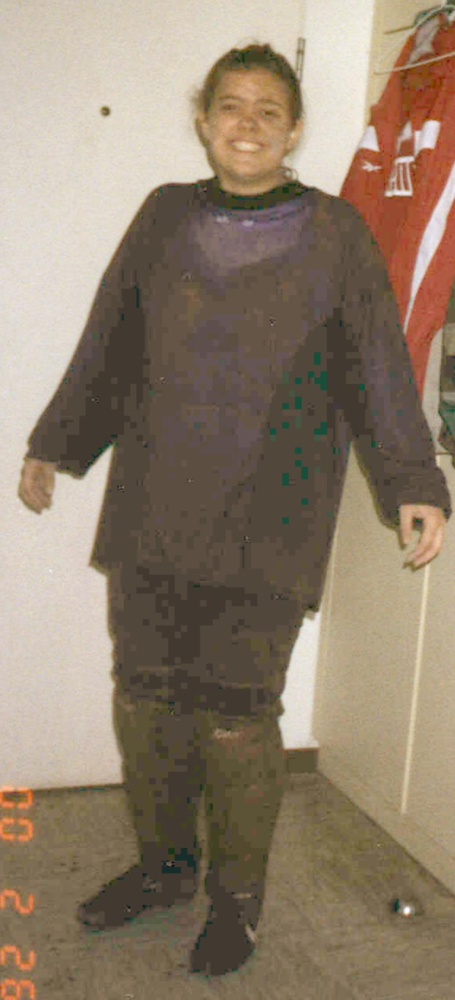
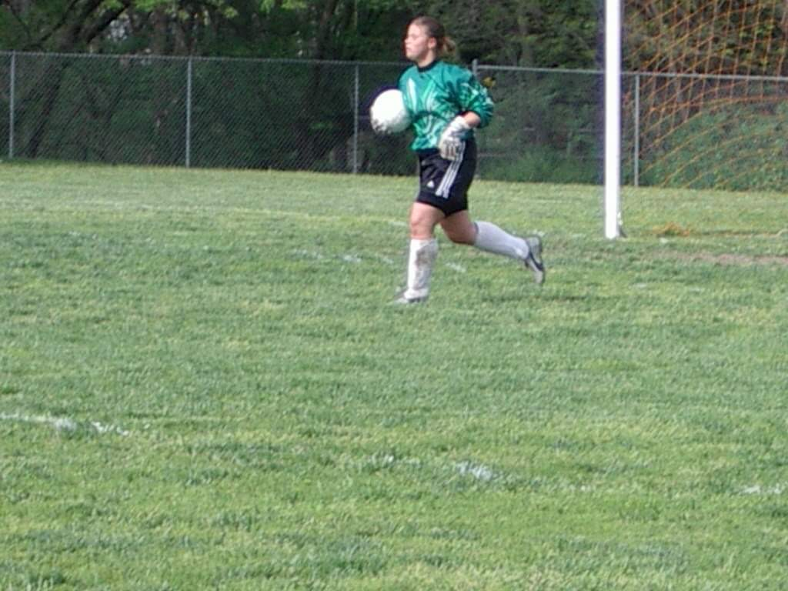
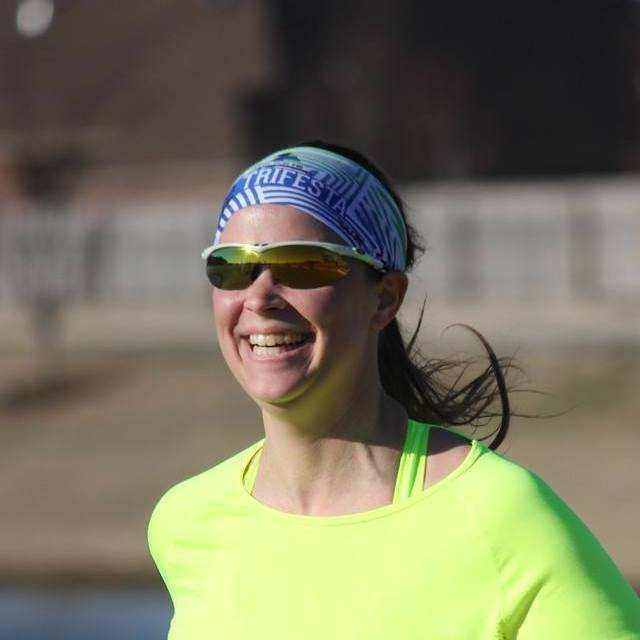
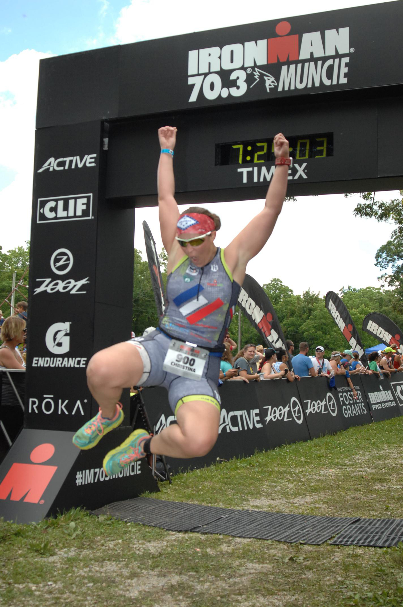
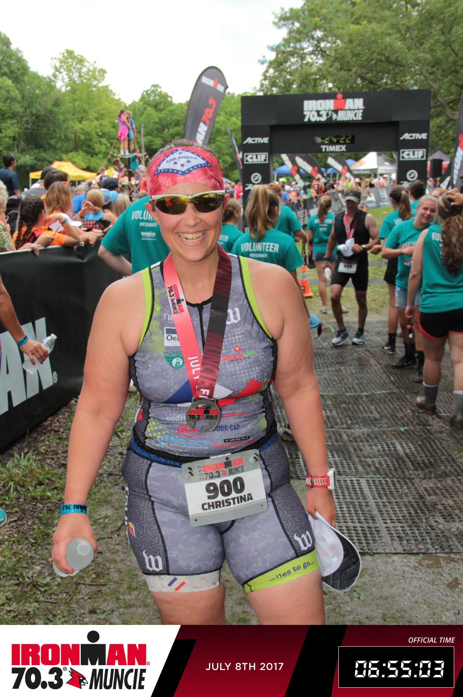

Early Years
Gymnastics
Gymnastics was my first love. I started dance/acrobatics classes when I was three. I did competitive gymnastics in second and third grade. Although the cost grew prohibitive, the skills learned laid a valuable foundation for my future athletic endeavors.
Soccer
After I moved from northern New York to Virgina. I switched to soccer. Playing recreationally, I discovered I had some talent as a goalkeeper. After moving to Germany, I played on a German club team for two years until I started high school. The soccer team was small, as was the school (the now defunct Mannheim American High School), but nevertheless I was the starting varsity goalkeeper.
The summer following my freshman year of high school, I moved to Kansas. I managed/practiced with the boys soccer team in the fall and was the starting varsity goalkeeper in the spring for the girls team. Our team wasn't very skilled and I was very busy between the posts (50+ touches in some games). I tried playing with a club briefly, but it was largely cost prohibitive. My senior season ended with (what I didn't know at the time, but would later find out) a torn ACL and meniscus.
Because the goalkeeper the program recruited had been badly injured, I managed to walk on to the University of Arkansas women's soccer team for my freshman year of college. It was a dream come true-- but only for a short time. During team onboarding the team doctor found, with simple hand tests, that my ACL was torn. Having never played a minute in a game, and not really fitting in, I had surgery to reconstruct my ACL and trim what was by that time a torn, folded, and scarred meniscus. I was also informed that I would not be returning to the team.

As An Adult
Triathlon
 After feeling like I was sitting on the sidelines in life for nearly a decade, I decided to give triathlon a go. Having enjoyed some recreational swimming and biking growing up (I had even purchased and enjoyed riding a road bike for a few years living in the Omaha area), it was a bucket list item. The only thing standing in my way was the last third of the triathlon--THE RUN(cue scary music).
As a kid, I quickly realized that I wasn't a particularly fast runner (but what I wouldn't now give for my middle and high school mile times). By being a goalkeeper, I did what I excelled at and avoided what I didn't. Add in the knee, and you could say I was afraid of running-- so I signed up for a half marathon training program. Miraculously, I learned to enjoy running (miracles happen when you give yourself permission to be "slow"). I completed my first half marathon in the early spring. That summer, I completed my first three triathlons over the course of two days- a super sprint, a sprint, and an Olympic distance("If it's worth doing, it's worth overdoing" is a bit of a motto for me). The next year, I did the same thing.
The year after that, I sat out the triathlon season and gave birth to my son. In July of 2017, a couple of weeks before his first birthday, I completed my first half Ironman triathlon (70.3 miles in Muncie, Indiana). In early February of 2018, I completed my first marathon.
Mountain Biking
Although I love long distance endurance events, I love seeing my family more. Weary of long training weekends, I bought my first mountain bike in the spring of 2018. Given the availability of trails and my love for cycling, I thought it a real shame that I didn't have a mountain bike. Mountain biking is a high intensity workout that can be crammed into a relatively short window. It's also a way to enjoy the beauty and peace of nature and still have exhiliration. I've since upgraded to a full-suspension bicycle and am enjoying riding even more! I hope, in the future, to try an enduro or endurance mountain bike event and also develop my own YouTube channel.

The Future?
Who knows? Currently I'm working toward building a running base...again. I'm pretty much back at square one. It's a bummer, but life happens and sometimes you just have to do what makes you happiest when life throws you around. Hopefully I can get back in shape to do another half marathon and my arthritic knee will cooperate. Having and maintaining a running base will help keep my options open for a lot of events and adventures. For me, committing to a race is so I have an event to train for and motivation to maintain a healthy lifestyle (I am accountable to the money I invest 😂). The race is just the victory lap of the journey to the start line.